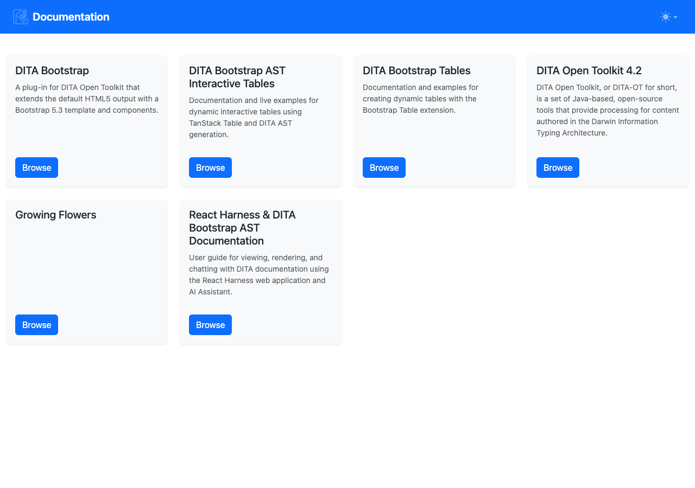
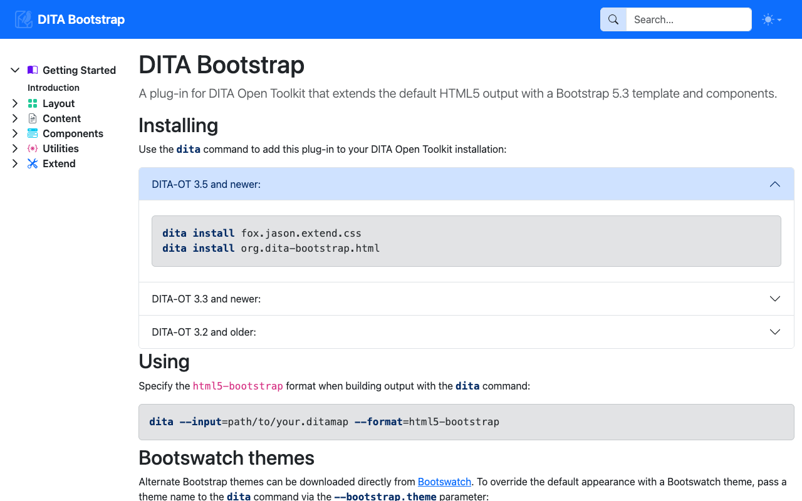
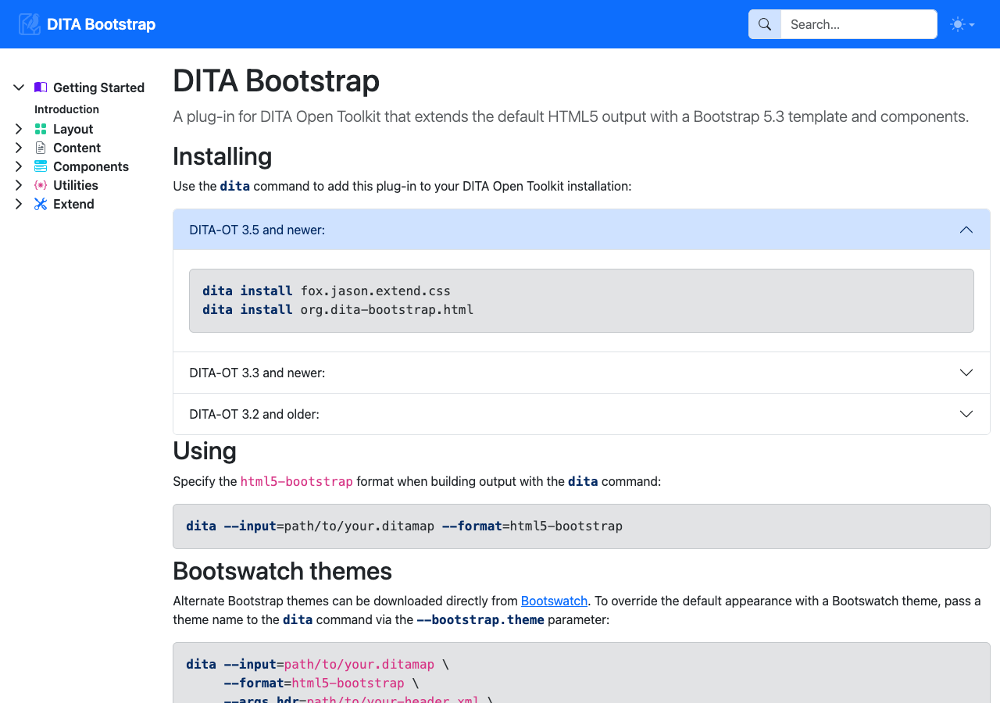
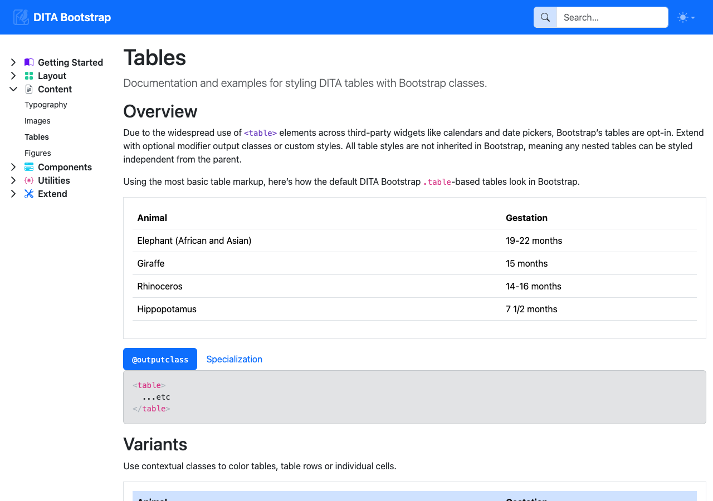

Core System Services
Overview of the containerized services supporting documentation storage, web rendering, and AI chat interactions.
Services Architecture
The React Harness environment consists of three background services that operate automatically when launched via docker compose up -d:
- Data Store (
data-store) — Automatic content indexing engine and REST data API. - Web Renderer (
renderer) — User-facing web portal for viewing topics and chatting with the AI Assistant. - MCP Server (
mcp-server) — AI tool server providing smart search, content context, and interactive UI component previews.
1. Data Store Service (data-store)
The data-store service operates on port 4000. It manages documentation discovery and full-text search automatically:
- Automatic Set Discovery — Any published documentation set placed into ./data-store/data/ is automatically discovered and made available in the library.
- Background Search Indexing — Automatically builds full-text search indices for all loaded document sets upon startup.
2. Web Renderer Service (renderer)
The renderer service provides the main user web application at http://localhost:3100.
User Interfaces:
- Documentation Store Catalog (/ or /docs) — Portal landing page displaying all published document sets. Select any card to start reading.
- Topic Reader View (/view/<doc-id>/<topic>) — Topic viewer rendering DITA content into styled Bootstrap components with sidebar navigation.
- AI Assistant Chat (/chat) — Interactive chatbot interface for asking technical questions and previewing live topic components.




3. MCP Server Service (mcp-server)
The mcp-server service operates on port 4001. It provides AI tools to enable smart search, Markdown text retrieval, and interactive topic UI frame rendering during chat interactions.